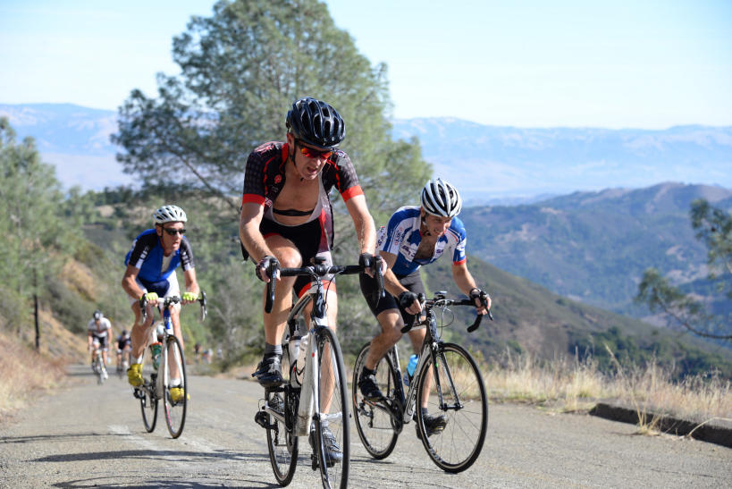

|
 |
 |
|  |
| Beyond the Gate (Ryan PC Gibson) |
A huge thanks to coordinator Will von Kaenel and Los Gatos Bike Racing club for a historic Low-Key Hillclimb this week up Hicks-Mt Umunhum.
Will's tireless and excellent work resulted in Low-Key being granted the first-ever road cycling permit for "beyond the gate" on Mount Umunhum Road. We hope this is a major step towards cyclists being able to ride all the way to the Umunhum summit, one of the major four Bay Area summits, next to Tamalpais, Diablo, and Hamilton.
But for today, we broke new territory for Low-Key and for Bay Area cycling. Low-Key had previously climbed Umunhum in 1996 and 2010, but only to the gate. Going beyond wasn't a matter of just "more of same" -- it added a major new steep portion in the additional 2 km, exceeding 13%, which substantially changed the character of the climb from "steep but not so long" to make it the #1 combination of sustained grade and distance per the Low-Key rating formula.
And for the historic occasion we were granted supernaturally good weather for the late date. Indeed, while we've gotten rained on here both in 1996 and 2011, for 2014 it was warm sunshine with temperatures well into the mid-70F's. This is cyclocross season, people!
And on the day, there were some impressive division leaders, with Amy Cameron leading Anne Valta and McLovely Brown for the women's top 3, Janet Gardner and Marty Scott not far behind. In the men's division, it was an incredible finish between Low-Key week 1 winner Nick Bax edging out Low-Key Über-Junior Adrien Costa for the incredible win, followed by Stefano Profumo and, in 4th and 5th, slow-starters Brian Lucido and Chris Evans. Indeed, it had been a fast start on Hicks Road, and Brian, riding a steady number from his new PowerTap, came storming past most of the lead group as the early enthusiasm of trying to follow Nick and Adrien's unsustainable VAM faded.
One big story today was the juniors. At the front, it's easy to forget Adrien Costa is still a junior, as he's been dominent in Low-Key so long, and has won several major international races in his racing career. But another story was team Vikings led by cross-country runner Lucas Matison. Here's Lucas crossing the line for 110 points (as calculated after week 6: points subject to change). Put this guy on a racing bike and Adrien and Nick will have some more competition... But a super-strong ride as well by Lucas' Vikings teammate, Parker Gara, with Kent Slaney, also riding in running shoes, not far behind to put the Vikings in a super-impressive sixth place overall to put them 9th overall for the serries so far, making Vikings one of the best if not the best all-junior team in Low-Key history.
We had two tandems today: Pauls McKenzie and Chuck (tandem teams always seem to share one name) showed off the former's super-impressive custom carbon fiber Landshark with 107 points. Meanwhile our mixed tandem team of Emma and Jonathan Dixon also rode impressively on the steep slopes to an excellent second place.
On the team side, it was Squadra SF breaking the 400 point barrier, perhaps for the first time in Low-Key history. Sisters and Misters was also super-impressive in second, with the Brown Zone making a very strong third place showing. Coordinating team LGBRC made a very strong 4th place showing despite so many of its riders doing volunteer duty today.
Thanks to all the volunteers and riders and especially to Will and Lynn von Kaenel for making this such a historic Low-Key success story! And thanks also to the Open Space rangers and staff for their cooperation in allowing us to enjoy the great day on the mountain!
KOM special mention qualifiers indicated with orange background.
| pl | # | name | team | cat | time | mph | fph | score |
|---|---|---|---|---|---|---|---|---|
| 1 | 400 | Amy Cameron | Sr's & Mr's of No Mercy | 35+ | 34:34 | 7.13 | 3746 | 127.54 |
| 2 | 519 | Anne Valta | Thirsty Bear p/b Akamai | 45+ | 34:49 | 7.08 | 3719 | 126.65 |
| 3 | 34 | McLovely Brown | The Brown Zone | Mother Of Two | 35:01 | 7.04 | 3698 | 125.95 |
| 4 | 72 | Janet Gardner | Sr's & Mr's of No Mercy | 45+ | 35:17 | 6.99 | 3670 | 125.03 |
| 5 | 140 | Marty Scott | LGBRC | 55+ | 36:11 | 6.82 | 3578 | 122.02 |
| 6 | 224 | Tracy Lillig | CA Technologies | Make It To The Top | 36:37 | 6.73 | 3536 | 120.62 |
| 7 | 228 | Jennie Phillips | Sr's & Mr's of No Mercy | 50+ | 36:43 | 6.72 | 3526 | 120.30 |
| 8 | 626 | Sarah Schroer | Sr's & Mr's of No Mercy | 40+ | 37:28 | 6.58 | 3456 | 117.97 |
| 9 | 94 | Louise Kobin | solo | 45+ | 38:03 | 6.48 | 3403 | 116.22 |
| 10 | 138 | Amber Schult | LGBRC | 40+ | 38:14 | 6.45 | 3387 | 115.68 |
| 11 | 202 | Honey Badger Brown | The Brown Zone | Last One! | 38:27 | 6.41 | 3367 | 115.05 |
| 12 | 17 | Lynn Sestak | The Brown Zone | 55+ | 38:51 | 6.35 | 3333 | 113.91 |
| 13 | 318 | Trish Pacheco | Sr's & Mr's of No Mercy | 45+ | 41:06 | 6.00 | 3150 | 107.87 |
| 14 | 311 | Holly Harris | Sr's & Mr's of No Mercy | 50+ | 44:22 | 5.56 | 2918 | 100.17 |
| 15 | 627 | Eva Silverstein | Western Wheelers | 40+ | 44:32 | 5.54 | 2907 | 99.81 |
| 16 | 220 | Sandra King | Equipe Flamme Rouge | 45+ | 44:33 | 5.54 | 2906 | 99.77 |
| 17 | 600 | Felicity Adler | Team Straggler | Meow | 45:01 | 5.48 | 2876 | 98.77 |
| 18 | 52 | Bonnie Denoyer | Scott | 45+ | 46:25 | 5.31 | 2790 | 95.89 |
| 19 | 502 | Rialena Bradbury | Team F&F | 30+ | 48:28 | 5.09 | 2672 | 91.96 |
| 20 | 620 | Magdalena Novotna | El Camino Tri Club | 45+ | 51:39 | 4.77 | 2507 | 86.47 |
| 21 | 60 | Lisa Emmerich | Sr's & Mr's of No Mercy | 50+ | 51:43 | 4.77 | 2504 | 86.36 |
| 22 | 612 | Andrea Ivan | Silicon Valley Triathlon | 60+ | 60:17 | 4.09 | 2148 | 74.46 |
reference time for division Women = 44:26
| pl | # | name | team | cat | time | mph | fph | score |
|---|---|---|---|---|---|---|---|---|
| 1 | 28 | Nick Bax | Squadra SF | Hungover Cat 1 | 25:18 | 9.75 | 5118 | 143.87 |
| 2 | 606 | Adrien Costa | Cal Giant | 1/Jr | 25:24 | 9.71 | 5098 | 143.32 |
| 3 | 122 | Stefano Profumo | Squadra SF | 35+ | 27:18 | 9.03 | 4743 | 133.66 |
| 4 | 225 | Brian Lucido | Sr's & Mr's of No Mercy | 35+ | 28:01 | 8.80 | 4622 | 130.35 |
| 5 | 61 | Chris Evans | Squadra SF | 2 | 28:15 | 8.73 | 4583 | 129.31 |
| 6 | 45 | David Collet | Pen Velo/Pomodoro | 40+ | 28:23 | 8.69 | 4562 | 128.72 |
| 7 | 99 | Bill Laddish | Team CVC | 35+ | 28:33 | 8.64 | 4535 | 127.99 |
| 8 | 14 | Rich McLovin Brown | The Brown Zone | 35+ | 29:32 | 8.35 | 4384 | 123.87 |
| 9 | 149 | Joseph Sullivan | San Jose Bike Club | 35+ | 29:38 | 8.32 | 4369 | 123.46 |
| 10 | 1 | Daniel Connelly | Low-Key | 45+ | 29:44 | 8.29 | 4355 | 123.06 |
| 11 | 500 | Graham Abra | Squadra SF | 35+ | 29:59 | 8.22 | 4318 | 122.07 |
| 12 | 109 | Shahram Moatazedi | LGBRC | 40+ | 31:01 | 7.95 | 4175 | 118.13 |
| 13 | 112 | Rob Nast | Plus 3 | 50+ | 31:07 | 7.93 | 4161 | 117.76 |
| 14 | 610 | Elliot Hawkes | Elliot Hawkes | Will Go Hard But Not Going To Win Anything | 31:33 | 7.82 | 4104 | 116.20 |
| 15 | 16 | Joe Fant | The Brown Zone | 55+ | 31:48 | 7.75 | 4072 | 115.31 |
| 16 | 49 | Andy Crews | Diablo | 40+ | 32:01 | 7.70 | 4044 | 114.56 |
| 17 | 146 | Daryl Spano | The Brown Zone | 45+ | 32:03 | 7.69 | 4040 | 114.44 |
| 18 | 307 | Scott Gammon | Nest | 6 | 32:05 | 7.69 | 4036 | 114.33 |
| 19 | 29 | Jeffrey Baxter | LGBRC | 45+ | 32:37 | 7.56 | 3970 | 112.52 |
| 20 | 629 | Kevin Susco | Sr's & Mr's of No Mercy | 55+ | 32:44 | 7.53 | 3956 | 112.13 |
| 21 | 314 | Lucas Matison | Vikings | Junior | 33:03 | 7.46 | 3918 | 111.09 |
| 22 | 308 | Parker Gara | Vikings | Junior | 33:32 | 7.35 | 3861 | 109.54 |
| 23 | 80 | Jason Hopkins | Team CVC | 40+ | 33:34 | 7.35 | 3857 | 109.44 |
| 24 | 227 | Christian Paquet | Grumpy Old Men (GOM) | 55+ | 33:44 | 7.31 | 3838 | 108.91 |
| 25 | 201 | Jeff Botelho | CA Technologies | 45+ | 34:11 | 7.21 | 3788 | 107.53 |
| 26 | 96 | Scott Krahn | LGBRC | 30+ | 34:11 | 7.21 | 3788 | 107.53 |
| 27 | 115 | Sani Obhodas | the campbell crew | 25+ | 34:14 | 7.20 | 3782 | 107.37 |
| 28 | 320 | Kent Slaney | Vikings | Junior | 34:18 | 7.19 | 3775 | 107.17 |
| 29 | 407 | Curtis Kimble | Red Peloton | 50+ | 34:19 | 7.19 | 3773 | 107.12 |
| 30 | 212 | Roland Freund | Team Plan C | 55+ | 34:22 | 7.18 | 3768 | 106.97 |
| 31 | 119 | Jim Perreira | Team Bici | 45+ | 34:28 | 7.15 | 3757 | 106.67 |
| 32 | 101 | Robert Lojek | 35+ | 34:41 | 7.11 | 3733 | 106.03 | |
| 33 | 92 | Terrance Kloeckl | Younger Next Year | 50+ | 35:03 | 7.04 | 3694 | 104.95 |
| 34 | 611 | Chris Heisterkamp | No team | 35+ | 35:05 | 7.03 | 3691 | 104.86 |
| 35 | 628 | Marco Soldano | Quadzilla Racing | 45+ | 35:23 | 6.97 | 3659 | 104.00 |
| 36 | 22 | Bruno Acklin | Clagnuts | 50+ | 35:33 | 6.94 | 3642 | 103.52 |
| 37 | 81 | Tick Houk | The Brown Zone | 55+ | 35:38 | 6.92 | 3634 | 103.29 |
| 38 | 31 | Geoffrey Bower | DASH | 30+ | 35:46 | 6.89 | 3620 | 102.92 |
| 39 | 506 | Dirk De Bruyker | Team F&F | 40+ | 35:51 | 6.88 | 3612 | 102.69 |
| 40 | 621 | Bruce Pauly | Sr's & Mr's of No Mercy | 55+ | 35:54 | 6.87 | 3607 | 102.55 |
| 41 | 312 | Zachary Hilton | Sr's & Mr's of No Mercy | 35+ | 35:55 | 6.87 | 3605 | 102.50 |
| 42 | 226 | Chris Mickelsen | chris mickelsen | 55+ | 36:15 | 6.80 | 3572 | 101.59 |
| 43 | 223 | George Lillig | CA Technologies | Make It To The Top | 36:27 | 6.77 | 3552 | 101.05 |
| 44 | 624 | John Richardson | Pen Velo/Pomodoro | 60+ | 37:00 | 6.66 | 3499 | 99.60 |
| 45 | 618 | Scott McLeod | Your Pace or Mine | 30+ | 37:08 | 6.64 | 3487 | 99.25 |
| 46 | 630 | Ben Weir | Western Wheelers | 30+ | 37:11 | 6.63 | 3482 | 99.12 |
| 47 | 117 | Frank Paysen | Chain Reaction | 50+ | 37:43 | 6.54 | 3433 | 97.76 |
| 48 | 121 | Thomas Preisler | San Jose Bike Club | 55+ | 37:49 | 6.52 | 3424 | 97.51 |
| 49 | 150 | Andy Sutterfield | San Jose State University | 20+ | 37:50 | 6.52 | 3422 | 97.47 |
| 50 | 319 | Jeffery Rogers | San Jose Bike Club | 40+ | 37:55 | 6.50 | 3415 | 97.27 |
| 51 | 66 | Andrew Fitzhugh | N/A | 50+ | 38:00 | 6.49 | 3407 | 97.06 |
| 52 | 619 | Rob Naber | Low-Key Team | Make It To The Top Without A Heart Attack | 38:01 | 6.49 | 3406 | 97.02 |
| 53 | 124 | Mihai R. | 35+ | 38:05 | 6.48 | 3400 | 96.85 | |
| 54 | 239 | James Williams | NightRiders | 65+SJBC | 38:07 | 6.47 | 3397 | 96.77 |
| 55 | 85 | Tim Irvine | LGBRC | 40+ | 38:11 | 6.46 | 3391 | 96.61 |
| 56 | 159 | David Vrane | Sr's & Mr's of No Mercy | 50+ | 38:19 | 6.44 | 3379 | 96.28 |
| 57 | 139 | Jeremy Scott | Scott | 40+ | 38:27 | 6.41 | 3367 | 95.96 |
| 58 | 18 | Giles Douglas | 40+ | 38:43 | 6.37 | 3344 | 95.32 | |
| 59 | 110 | Ilya Moskovko | the campbell crew | 25+ | 38:47 | 6.36 | 3339 | 95.16 |
| 60 | 40 | Peter Cathcart | San Jose Bike Club | 50+ | 38:51 | 6.35 | 3333 | 95.00 |
| 61 | 160 | Brian Ward | Zombie Raccoon | 40+ | 39:12 | 6.29 | 3303 | 94.18 |
| 62 | 25 | David Anderson | Team Stoke | 55+ | 39:56 | 6.18 | 3242 | 92.51 |
| 63 | 625 | Eric Rogge | Pen Velo/Pomodoro | 55+ Cat 4 Roadie | 40:14 | 6.13 | 3218 | 91.84 |
| 64 | 82 | Martin Hyland | Diablo | 55+ | 40:27 | 6.10 | 3201 | 91.37 |
| 65 | 602 | Michael Andalora | Team Spokesman | 4 | 40:43 | 6.06 | 3180 | 90.79 |
| 66 | 162 | Han Wen | Grumpy Old Men (GOM) | 45+ | 40:48 | 6.04 | 3174 | 90.61 |
| 67 | 323 | Carl Werner | Scott | 50+ | 41:09 | 5.99 | 3147 | 89.86 |
| 68 | 36 | Scott Byer | 45+ | 41:09 | 5.99 | 3147 | 89.86 | |
| 69 | 508 | Frank Drobot | Team Djament | 65+ | 41:30 | 5.94 | 3120 | 89.13 |
| 70 | 134 | Koushik Sampath | LGBRC | 25+ | 41:39 | 5.92 | 3109 | 88.82 |
| 71 | 324 | Niall Fitzgerald | LGBRC | 25+ | 41:48 | 5.90 | 3098 | 88.51 |
| 72 | 238 | Walter Wang | PBCC | 40+ | 41:53 | 5.89 | 3091 | 88.34 |
| 73 | 91 | Larry Klein | Grumpy Old Men (GOM) | 50+ | 42:13 | 5.84 | 3067 | 87.66 |
| 74 | 30 | Bernard Bell | PBCC | 50+ | 42:31 | 5.80 | 3045 | 87.07 |
| 75 | 47 | Richard Contreras | rhus | 55+ | 42:45 | 5.77 | 3029 | 86.61 |
| 76 | 114 | Bart Niechwiej | 35+ | 43:17 | 5.70 | 2991 | 85.57 | |
| 77 | 615 | Marcin Kosiba | Velosport CC | 25+ | 44:07 | 5.59 | 2935 | 84.01 |
| 78 | 306 | Larry Douglas | LGBRC | 35+ | 44:58 | 5.48 | 2879 | 82.47 |
| 79 | 86 | Tom Jakaby | Buycell | 55+ | 45:19 | 5.44 | 2857 | 81.85 |
| 80 | 26 | Stephen Anderson | Team Stoke | 20+ | 46:01 | 5.36 | 2814 | 80.65 |
| 81 | 38 | Kley Cardona | NightRiders | 50+ | 46:13 | 5.34 | 2802 | 80.31 |
| 82 | 601 | Tony Amadio | Clagnuts | 30+ | 47:16 | 5.22 | 2739 | 78.59 |
| 83 | 608 | Aaron Germain | Vincolo | 25+ | 47:24 | 5.20 | 2732 | 78.37 |
| 84 | 53 | Gilles Denoyer | Scott | 40+ | 48:21 | 5.10 | 2678 | 76.88 |
| 85 | 603 | Nash Anderson | Shake n' bake | Make It To The Top! | 48:52 | 5.05 | 2650 | 76.09 |
| 86 | 605 | Jorge Chang | Grumpy Old Men (GOM) | 35+ | 49:14 | 5.01 | 2630 | 75.55 |
| 87 | 108 | Ed Miller | SLACer | 70+ | 49:54 | 4.94 | 2595 | 74.57 |
| 88 | 609 | Brad Gyger | Your Pace or Mine | 35+ | 50:28 | 4.89 | 2566 | 73.76 |
| 89 | 143 | Gregory P Smith | Zombie Raccoon | Dark Meat & Stuffing | 51:47 | 4.76 | 2500 | 71.94 |
| 90 | 103 | Thomas Maltbaek | MTBR | 25+ | 52:50 | 4.67 | 2451 | 70.56 |
| 91 | 113 | Ronald Ng | Bike Commuter Cabal | 50+ | 53:13 | 4.63 | 2433 | 70.07 |
| 92 | 616 | Paul MacKinlay | Gumdrop Cases | Just Make It To The Top | 53:50 | 4.58 | 2405 | 69.29 | x | 221 | West Kurihara | Team Fremont FFBC p/b Chipotle | 55+ | DQ |
reference time for division Men = 36:50
| pl | # | name | team | cat | time | mph | fph | score |
|---|---|---|---|---|---|---|---|---|
| 1 | 315 | Paul McKenzie | Sr's & Mr's of No Mercy | 60+ | 37:08 | 6.64 | 3487 | 99.25 |
| 504 | Paul Chuck | Sr's & Mr's of No Mercy | 55+ | |||||
| 2 | 55 | Emma Dixon | 35+ | 41:56 | 5.88 | 3088 | 96.21 | |
| 56 | Jonathan Dixon | 35+ |
| pl | team | score | riders |
|---|---|---|---|
| 1 | Squadra SF | 406.84 | Nick Bax, Stefano Profumo, Chris Evans, Graham Abra |
| 2 | Sr's & Mr's of No Mercy | 382.92 | Brian Lucido, Kevin Susco, Amy Cameron, Janet Gardner, Bruce Pauly, Zachary Hilton, Jennie Phillips, Paul McKenzie, Paul Chuck, Sarah Schroer, David Vrane, Trish Pacheco, Holly Harris, Lisa Emmerich |
| 3 | The Brown Zone | 365.13 | Rich McLovin Brown, Joe Fant, Daryl Spano, McLovely Brown, Tick Houk, Honey Badger Brown, Lynn Sestak |
| 4 | LGBRC | 355.83 | Shahram Moatazedi, Jeffrey Baxter, Scott Krahn, Marty Scott, Tim Irvine, Amber Schult, Koushik Sampath, Niall Fitzgerald, Larry Douglas |
| 5 | CA Technologies | 329.20 | Jeff Botelho, George Lillig, Tracy Lillig |
| 6 | Vikings | 327.81 | Lucas Matison, Parker Gara, Kent Slaney |
| 7 | Pen Velo/Pomodoro | 320.16 | David Collet, John Richardson, Eric Rogge |
| 8 | San Jose Bike Club | 318.24 | Joseph Sullivan, Thomas Preisler, Jeffery Rogers, Peter Cathcart |
| 9 | 299.09 | Robert Lojek, Mihai R., Giles Douglas, Scott Byer, Emma Dixon, Jonathan Dixon, Bart Niechwiej | |
| 10 | Grumpy Old Men (GOM) | 287.19 | Christian Paquet, Han Wen, Larry Klein, Jorge Chang |
| 11 | Scott | 281.71 | Jeremy Scott, Carl Werner, Bonnie Denoyer, Gilles Denoyer |
| 12 | Team CVC | 237.43 | Bill Laddish, Jason Hopkins |
| 13 | Diablo | 205.93 | Andy Crews, Martin Hyland |
| 14 | the campbell crew | 202.54 | Sani Obhodas, Ilya Moskovko |
| 15 | Western Wheelers | 198.93 | Ben Weir, Eva Silverstein |
| 16 | Team F&F | 194.65 | Dirk De Bruyker, Rialena Bradbury |
| 17 | Clagnuts | 182.11 | Bruno Acklin, Tony Amadio |
| 18 | NightRiders | 177.08 | James Williams, Kley Cardona |
| 19 | PBCC | 175.40 | Walter Wang, Bernard Bell |
| 20 | Team Stoke | 173.16 | David Anderson, Stephen Anderson |
| 21 | Your Pace or Mine | 173.01 | Scott McLeod, Brad Gyger |
| 22 | Zombie Raccoon | 166.13 | Brian Ward, Gregory P Smith |
| 23 | Cal Giant | 143.32 | Adrien Costa |
| 24 | Thirsty Bear p/b Akamai | 126.65 | Anne Valta |
| 25 | Low-Key | 123.06 | Daniel Connelly |
| 26 | Plus 3 | 117.76 | Rob Nast |
| 27 | solo | 116.22 | Louise Kobin |
| 28 | Elliot Hawkes | 116.20 | Elliot Hawkes |
| 29 | Nest | 114.33 | Scott Gammon |
| 30 | Red Peloton | 107.12 | Curtis Kimble |
| 31 | Team Plan C | 106.97 | Roland Freund |
| 32 | Team Bici | 106.67 | Jim Perreira |
| 33 | Younger Next Year | 104.95 | Terrance Kloeckl |
| 34 | No team | 104.86 | Chris Heisterkamp |
| 35 | Quadzilla Racing | 104.00 | Marco Soldano |
| 36 | DASH | 102.92 | Geoffrey Bower |
| 37 | chris mickelsen | 101.59 | Chris Mickelsen |
| 38 | Equipe Flamme Rouge | 99.77 | Sandra King |
| 39 | Team Straggler | 98.77 | Felicity Adler |
| 40 | Chain Reaction | 97.76 | Frank Paysen |
| 41 | San Jose State University | 97.47 | Andy Sutterfield |
| 42 | N/A | 97.06 | Andrew Fitzhugh |
| 43 | Low-Key Team | 97.02 | Rob Naber |
| 44 | Team Spokesman | 90.79 | Michael Andalora |
| 45 | Team Djament | 89.13 | Frank Drobot |
| 46 | rhus | 86.61 | Richard Contreras |
| 47 | El Camino Tri Club | 86.47 | Magdalena Novotna |
| 48 | Velosport CC | 84.01 | Marcin Kosiba |
| 49 | Buycell | 81.85 | Tom Jakaby |
| 50 | Vincolo | 78.37 | Aaron Germain |
| 51 | Shake n' bake | 76.09 | Nash Anderson |
| 52 | SLACer | 74.57 | Ed Miller |
| 53 | Silicon Valley Triathlon | 74.46 | Andrea Ivan |
| 54 | MTBR | 70.56 | Thomas Maltbaek |
| 55 | Bike Commuter Cabal | 70.07 | Ronald Ng |
| 56 | Gumdrop Cases | 69.29 | Paul MacKinlay |